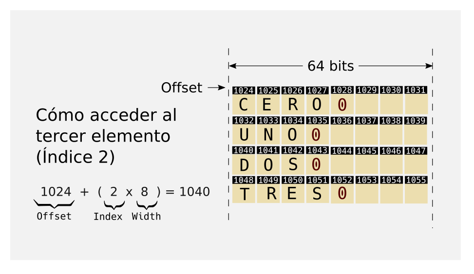

Con las listas (o tuplas) accedemos a los valores por su
índice o posición
Esto es fácil de implementar: a partir del índice se consigue
la dirección de memoria
donde está el dato
Con las listas es fácil

Con las listas es fácil
¿Cómo lo hacen los diccionarios?
Se puede usas (casi) cualquier cosa como índice
No hay una función matemática que a partir de la clave
pueda indicarnos la posición en memoria del contenido
¿Cómo lo hacen los diccionarios?
Una aproximación ingenua
Podriamos guardar una lista de tuplas
Cada tupla constaria de dos elementos, la clave y el valor
Para acceder, buscando la tupla cuya
clave sea igual a la indicada
Devolvemos el valor si lo encontramos, o elevamos
una excepcion KeyError si no
¿Cómo lo hacen los diccionarios?
No escala. Según crece el diccionario, más tardará, de
media, en localizar un valor
¿Cómo lo hacen los diccionarios?
notación de Landau
El acceso a la lista es independiente del tamaño de la misma, porque
solo tiene que hacer una multiplicación y una suma, no importa
donde esté ubicado el valor
El acceso a la lista es O(1) u Orden constante
notación de Landau
Nuestro "Diccionario" tiene orden O(n), u Orden lineal
o de primer orden porque lo rápido que sea dependerá del número
de valores almacenados
O(1) es
mucho, mucho mejor que O(n)
El mérito del diccionario
es tener orden O(1), es decir,
que devuelva en un tiempo constante el resultado independientemente
del tamaño del diccionario
Funciones Hash
Transforman un dato o conjunto de
datos en un número dentro un
rango limitado
Si dos datos son iguales,
producen el mismo valor de hash
Si dos datos son diferentes, aun
así podrían producir el mismo
valor de hash. Esto se conoce como colisiones
Ante un pequeño cambio en los
datos de entrada, se produce un número muy diferente
Matemáticamente
$$ \forall a,b | a = b \Rightarrow hash(a) = hash(b) $$
Pero Lo contrario no tiene que ser cierto, si dos valores
tienen el mismo valor de hash, no implica que sean iguales
$$ \forall a,b | hash(a) = hash(b) \nRightarrow a = b $$
Diferentes funciones Hash
Existen muchas funciones hash
Una de las más conocidas son la familia de funciones SHA-A
(Secure Hash Algorith)
Existen 4 variedades: SHA-224, SHA-256, SHA-384 y SHA-512, que
producen resultados de 224, 256, 384 y 512 bits respectivamente
Otras funciones hash conocidas son MD5, BLAKE, Tiger, Whirlpool...
Qué funcion hash usa Python?
Python utiliza distintas funciones hash
Dependiendo de varios factores, entre ellos, el tipo de dato
Para los enteros, por ejemplo, es simplemente el mismo número
Se puede controlar el valor de hash para las instancias
de nuestras clases, definiendo un método __hash__